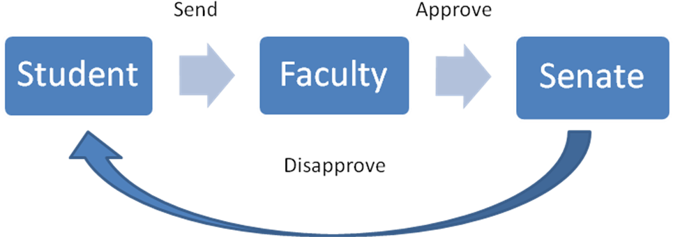

The first scenario, student will send the thesis proposal to get approval from Faculty but the thesis proposal was Disapprove by Senate because of the certain reason and student will notify through postgraduate system.

The second scenario, Faculty was Disapprove the thesis proposal before the thesis proposal sent to Senate for endorsement.
Created with the Personal Edition of HelpNDoc: Easily create Help documents